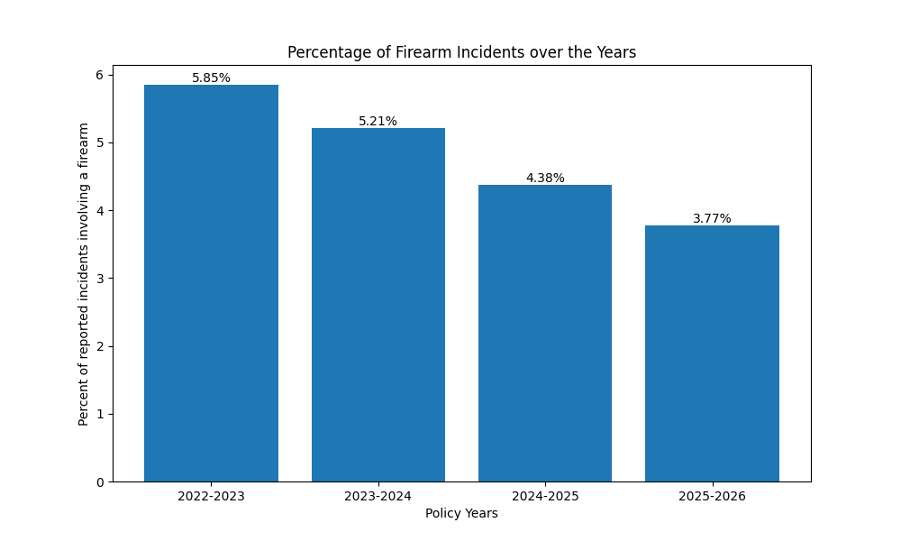
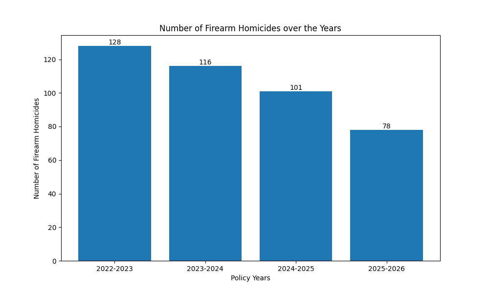
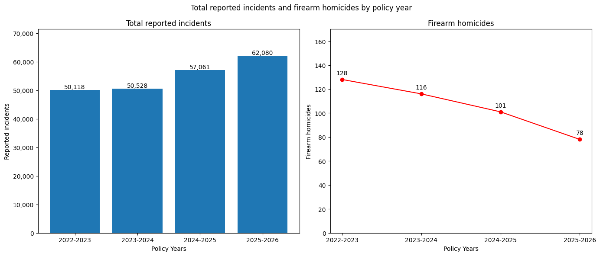

Atlanta. Four years after constitutional carry. Four years into the Dickens era. The data shows what changed. It does not say why.
In April 2022, Georgia began allowing eligible adults to carry handguns without a permit, commonly called constitutional carry. Supporters said the law removed a burden on law-abiding citizens. Critics said it would put more guns on the street.
Andre Dickens took office as Mayor of Atlanta in January 2022, so the four years analyzed here fall within his time in office. The two events arriving close together prompted a natural question. What happened next?
This analysis uses four years of Atlanta Police Department incident data to describe what happened to firearm-involved incidents over that period, without a predetermined answer. It does not test whether the law or the administration caused any change. No political framing. No advocacy. Just the numbers and what they say, and what they do not say.
The raw dataset contained 220,581 incident records across 29 columns pulled from the Atlanta PD Open Data Portal. The data was profiled, cleaned, and loaded into a SQLite database. Five columns were retained for analysis: incident ID, report date, firearm involvement flag, NIBRS offense code, and NIBRS offense description.
Records were filtered to the analytical window of April 1, 2022 through March 31, 2026. Five records with physically impossible dates were removed along with six null date entries and records falling outside the window. The final working dataset contained 219,787 records.
Three business questions were asked before any data was explored. Firearm involvement by policy year. Firearm-involved homicide trend by policy year. And the overall trajectory of firearm violence across the four-year period.
A policy year is the 12-month span from April 1 through the following March 31. This divides the 48-month window into four equal segments, labeled 2022–2023 through 2025–2026, with no partial years. Constitutional carry took effect during April 2022, and for this analysis the entire month is treated as inside the law.
Incidents are all records in a policy year. Firearm incidents are records where the firearm flag is “yes.” Firearm homicides are NIBRS code 09A records with the firearm flag. Firearm share is firearm incidents divided by all incidents. The homicide rate is firearm homicides per 100 firearm incidents. Year-over-year change is the absolute difference from the prior policy year.
The share of reported incidents involving a firearm fell from 5.85% in the first policy year to 3.77% in the fourth. Two things moved at once. Firearm-involved incidents fell about 20%, from 2,930 to 2,341, and they declined in every policy year. Total reported incidents rose about 24%, from 50,118 to 62,080.
Both movements push the share down, and by simple arithmetic they contribute about equally. The percentage alone blurs this, so the raw counts are the more direct measure. Firearm incidents did fall, and the growing denominator made the share fall further.
Firearm incidents fell about 20% over four years while total reported incidents rose about 24%. The firearm share fell for both reasons.
The rise in total reported incidents was not investigated. It could reflect more offenses, more reporting, or changes in how incidents are classified, and this analysis cannot say which.

Firearm homicides fell in every policy year: 128, then 116, then 101, then 78. The drop grew each year (−12, −15, −23), and 2025–26 saw the largest decline.
Firearm incidents moved differently. The biggest single drop came in the second policy year (−297), and the declines that followed were smaller (−136, −156).
| Policy year | Reported incidents | Firearm incidents | Change | Firearm homicides | Change | Homicides per 100 firearm incidents |
|---|---|---|---|---|---|---|
| 2022–2023 | 50,118 | 2,930 | — | 128 | — | 4.37 |
| 2023–2024 | 50,528 | 2,633 | −297 | 116 | −12 | 4.41 |
| 2024–2025 | 57,061 | 2,497 | −136 | 101 | −15 | 4.04 |
| 2025–2026 | 62,080 | 2,341 | −156 | 78 | −23 | 3.33 |
Because firearm incidents and firearm homicides fell at different paces, the homicide rate per 100 firearm incidents was flat for the first two policy years (4.37, then 4.41) and fell only in the last two. Firearm incidents became less frequent first, and the share of them involving a homicide fell later. This describes the pattern. It does not explain it.
Firearm homicide counts are small, between 78 and 128 a year, so any single year-over-year change could be partly chance. The decline is more credible because it runs in the same direction every year and totals 50 over the period.

Placed side by side, the two trends move in opposite directions. Total reported incidents rose in every policy year, with most of the increase coming in the last two. Firearm incidents and firearm homicides fell in every policy year.
Firearm homicides fell about 39% from the first policy year to the last, from 128 to 78. Over that same stretch, reported incidents rose by almost 12,000 a year. The decline in firearm violence happened while total reported incidents were climbing.
The first policy year is the baseline. It already falls under constitutional carry, so this analysis measures change since that point, not the effect of the law. The dataset has no pre-law comparison.

Over four policy years, reported incidents in Atlanta rose about 24% while firearm incidents fell about 20% and firearm homicides fell about 39%. The data shows the direction. It does not say why.
Honest analysis acknowledges its blind spots. These are the ones worth naming.
The first policy year begins when constitutional carry took effect, so the analysis is silent on anything before it. Window one is the baseline for every change reported here. These results describe change since that baseline and do not measure the effect of the law.
Population was not taken into account. The figures are raw counts and shares of reported incidents, not rates per resident.
With 78 to 128 firearm homicides a year, a single year-over-year change could be partly chance. The consistency of the direction across all four years is the stronger evidence.
Reported incidents rose from 50,118 to 62,080, and the mix of incident types behind that increase was not examined. The cause is outside the scope of this analysis.
This analysis has no visibility into how many firearms were in circulation before or after constitutional carry took effect. That number would be central to understanding any link between gun availability and firearm crime. It does not exist in this dataset.
Policing strategy, court backlogs, local initiatives, economic conditions, and national crime trends all influence crime numbers. None are controlled for here, so this analysis cannot isolate the effect of any single factor, constitutional carry included.
The Atlanta PD Open Data Portal figures used in this analysis do not always match official FBI crime statistics. The FBI removes and reclassifies certain incidents during its reporting process. Readers who compare these findings to federal data may find discrepancies. The APD figures are used here because they are the most granular and most current source available for this window.
An earlier version of this case study grouped incidents by calendar year. Because the data runs from April 1, 2022 to March 31, 2026, that left 2022 with nine months of data and 2026 with three, and it split every policy window across two calendar years. All figures, charts, and findings have been rebuilt on April-to-March policy years.
Several claims in the earlier version were artifacts of that grouping and are withdrawn. These include the roughly 70% rise in total crime and the roughly 27,000 additional incidents per year, both of which compared nine months of 2022 to a full year. They also include the apparent 2026 uptick in firearm share, which compared three winter months to full years, and the 2023 homicide “anomaly,” along with the hypothesis offered to explain it.
The homicide query also changed. The earlier version counted all murders, 484 in total, regardless of weapon. The corrected version counts only firearm-involved murders, 423, which removed 61 non-firearm murders. That is a change in definition, not a decline in homicides, and the earlier per-year homicide counts are not comparable to the corrected ones.
What held: the firearm share, firearm incidents, and firearm homicides all trend downward. What did not hold: the conclusion that firearm violence barely moved while overall crime surged.